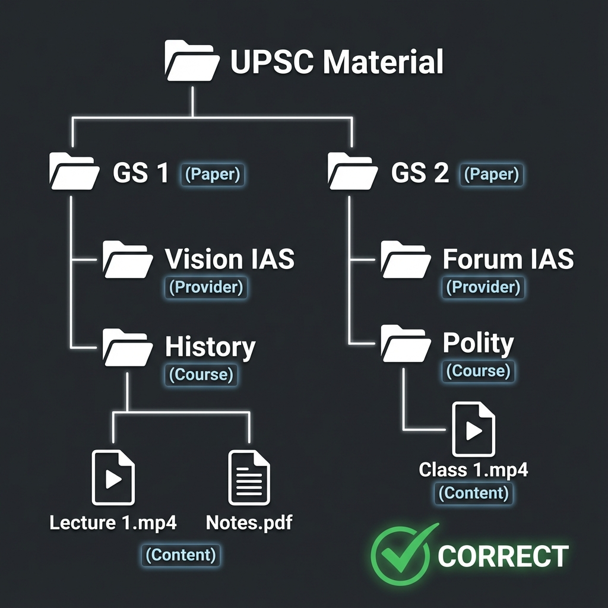
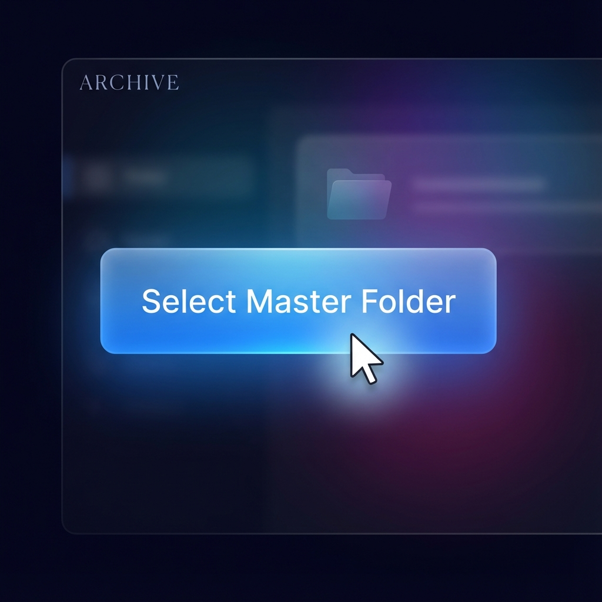
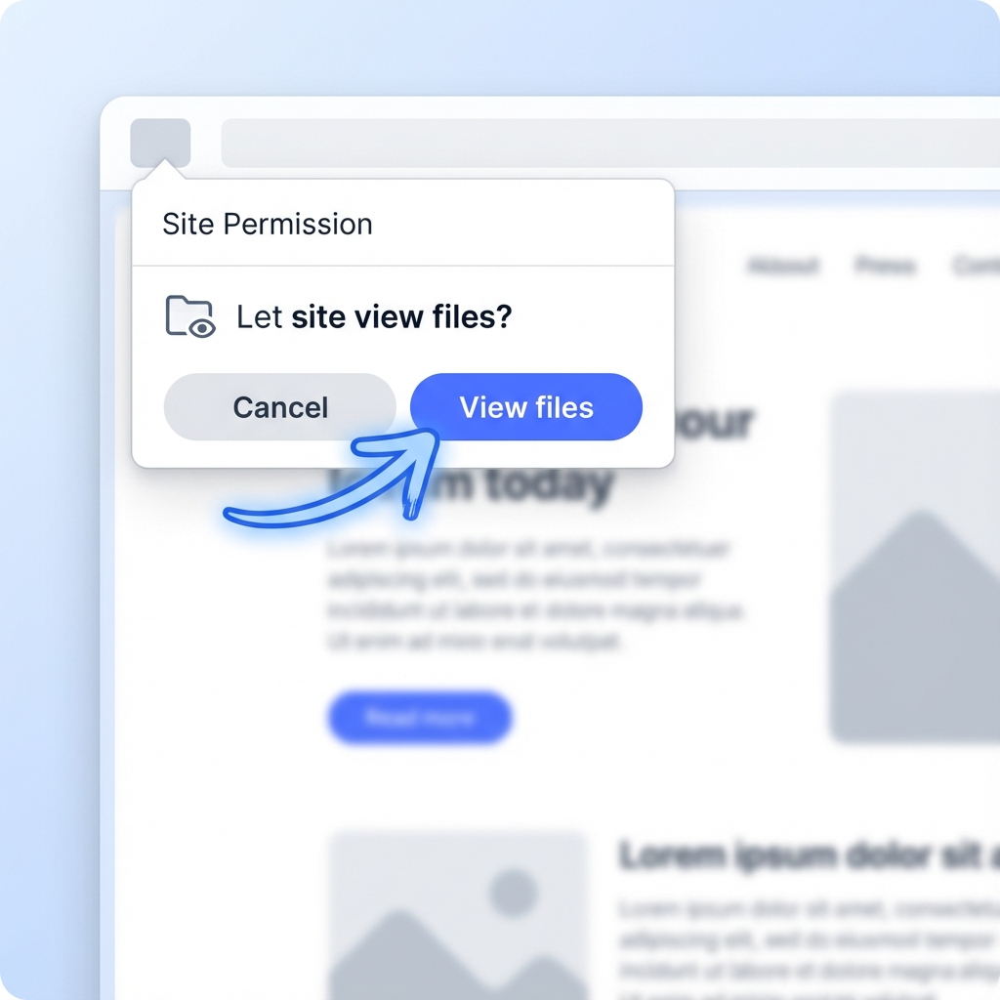

The Ultimate Offline Learning Environment
STOP AND READ THIS. The website will BREAK if you do not organize your folders exactly as shown below.
The app relies on a strict hierarchy to understand your study material. It expects data to be structured 4 levels deep.
1. Master Folder ➔ 2. Paper (GS1/GS2) ➔
3. Provider (Vision/Forum) ➔ 4. Course (History/Polity) ➔
5. Actual Files
Go to the official link you bookmarked. You will see a clean landing page.
Click the large blue button in the center. Do not select a sub-folder. Select the ROOT folder containing all your GS folders.
Your browser (Chrome/Edge) handles security strictly. It will ask if you want to let this site view your files.
You MUST click "View files". The site is offline-only; nothing is uploaded to the internet. It just reads the files on your disk to display them.
If your folder structure is correct (see Code Red section), the sidebar will instantly fill up with your Papers and Courses.
Track your progress like a pro. The dashboard updates automatically as you study.
Click any lecture to enter a distraction-free environment.
Your messy folders are automatically organized into a rigorous syllabus structure.
If the site looks broken, icons are missing, or styles look weird, you can force a refresh.
A hard refresh clears specific temporary data. You will need to re-select your Master Folder after refreshing.
Don't worry—your Analytics (streaks, completions) are saved in a permanent database and will NOT be lost.